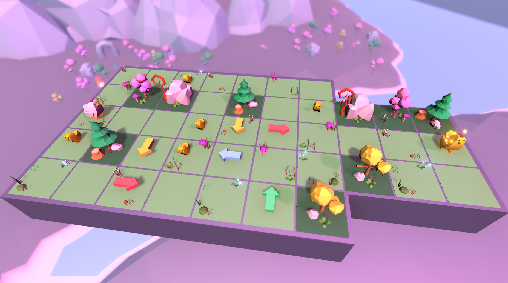

POLYCHICKEN
CSC 371 Game Design Project | Jan 2020



PolyChicken follows a chicken wanting to meet up with the shining golden chicken. However, the chicken is not very smart and can only go in one direction! Guide the chicken using the arrows in your inventory to change the direction of the chicken and solve the puzzle. Along the way, the chicken loses stamina as it runs. You can replenish your stamina by collecting the baby chicks around the map (because of course every parent gets their stamina replenished when they are with their kids)! When the chicken is at a higher stamina, it goes faster.
This game was created for my CSC 371 Game Design course in around three weeks. It was a fun and short project to work on. I enjoyed working on the level design and creating puzzles, so hopefully There are currently only three levels, but in the future I hope to add more levels and different mechanics to make the game more interesting.
Since I only had around three weeks to make the game, I used free 3D models from the Unity asset store. I did model the arrows and drew the icons for the UI. The music is from PikuNiku.
It would be awesome if you could play the game and possibly leave feedback!